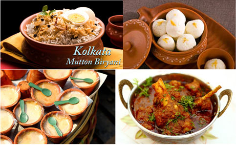

Travel Blog-Kolkata
ABOUT
TRAVELLING TO KOLKATA
DESTINATIONS
KOLKATA TRANSPORT
CUISINE
TRAVEL TIPS
BUDGET
üìåCLICK HERE TO VIEW FULL MAP
ABOUT
Kolkata, formerly known as Calcutta is the capital of India's West Bengal state. Founded as an East India Company trading post, it was India's capital under the British Raj from 1773–1911. Today it’s known for its grand colonial architecture, art galleries and cultural festivals. It’s also home to Mother House, headquarters of the Missionaries of Charity, founded by Mother Teresa, whose tomb is on site
In the late 17th century, the three villages that predated Calcutta were ruled by the Nawab of Bengal under Mughal suzerainty. After the Nawab granted the East India Company a trading licence in 1690, the area was developed by the Company into an increasingly fortified trading post known as Fort William.
Nawab Siraj ud-Daulah occupied Calcutta in 1756, and the East India Company retook it the following year. In 1793 the East India company was strong enough to abolish native rule, and assumed full sovereignty of the region. Under the company rule and later under the British Raj, Calcutta served as the capital of British-held territories in India until 1911. At that time, the British assessed its perceived geographical disadvantages, combined with growing nationalism in Bengal, and moved the capital to New Delhi. Calcutta was the centre for the Indian independence movement.
The Port of Kolkata is India's oldest operating port and its sole major riverine port. Kolkata is regarded as the cultural capital of India and the "City of Joy". Kolkata is home to West Bengal's film industry Tollywood and cultural institutions, such as the Academy of Fine Arts, the Victoria Memorial, the Asiatic Society, the Indian Museum, and the National Library of India. Among scientific institutions, Kolkata hosts the Agri Horticultural Society of India, the Geological Survey of India, the Botanical Survey of India, the Calcutta Mathematical Society, the Indian Science Congress Association, the Zoological Survey of India, the Institution of Engineers, the Anthropological Survey of India and the Indian Public Health Association. Four Nobel laureates and two Nobel Memorial Prize winners are associated with the city.
CLICK HERE TO RETURN TO TOP
TRAVELLING TO KOLKATA
BY PLANE:
People flying in to Kolkata will arrive at Netaji Subhash Chandra Bose International Airport. Flying is the fastest way to travel between cities in India but it’s also the most expensive. An airline aggregator like Skyscanner can be used to search for the cheapest flights to Kolkata from anywhere. The airport is about an hour north of the city so there is of arranging for a transfer to respective hotel. Uber booth just before exiting the terminal, there’s a prepaid taxi counter as well or private trasport should be arranged.
BY TRAIN:
Train must be taken only if there is no hurry. India has an extensive rail network, experienced travelers consider it the best way of getting around and experiencing this vast country. The easiest way to book train tickets in India is through
12Go Asia
It’s easier to use than
IRCTC website
BY BUS:
The cost between trains and sleeper buses is comparable. Buses can sometimes be more convenient because of the location of the stations, but they’re considered less comfortable than trains in general. Bus tickets can be purchased online through
redbus.in
or
makemytrip.com
OTHER OPTIONS:
There are other ways to get into Kolkata from nearer places. Check
12Go Asia
to find route options available.
Klook
also offers private transfers to and from Kolkata from Digha, Mandarmani, Shantiniketan, or Bishnupur in West Bengal.
CLICK HERE TO RETURN TO TOP
DESTINATIONS
Victoria Memorial--
The Victoria Memorial is a large marble building in Kolkata, which was built between 1906 and 1921. It is dedicated to the memory of Empress Victoria, and is now a museum under the auspices of the Ministry of Culture. The memorial lies on the Maidan and is one of the famous monuments of Kolkata
Indian Museum--
The Indian Museum in Kolkata, West Bengal, India, also referred to as the Imperial Museum at Calcutta in colonial-era texts, is the ninth oldest museum in the world, the oldest and largest museum in India. It has rare collections of antiques, armour and ornaments, fossils, skeletons, mummies and Mughal paintings.
Fort Willam--
Fort William is a fort in Calcutta, built during the early years of the Bengal Presidency of British India. The fort was named after King William III. In front of the Fort is the Maidan, the largest park in the city. An internal guard room became the Black Hole of Calcutta.
South Park Street Cemetery--
South Park Street Cemetery is located on Mother Teresa Sarani, Kolkata, India. The road used to be called Park Street, and prior to that Burial Ground Road with notable tombs.
Belur Math--
Beluṛ Maṭh is the headquarters of the Ramakrishna Math and Ramakrishna Mission, founded by Swami Vivekananda, the chief disciple of Ramakrishna Paramahamsa. It is located on the west bank of Hooghly River, Belur, West Bengal, India and is one of the significant institutions in Kolkata. The temple is the heart of the Ramakrishna movement. It is notable for its architecture that fuses Hindu, Islamic, Buddhist, and Christian art and motifs as a symbol of unity of all religions
Dakshineswar Kali Temple--
Dakshineswar Kali Temple is a Hindu navaratna temple located at Dakshineswar. The temple was built in 1855 by Rani Rashmoni, a philanthropist and a devotee of Kali. The temple is known for its association with Ramakrishna and Ma Sarada Devi, mystics of 19th Century Bengal. There are four main Adi Shakti Peethas where one of the body parts of Adi Shakti fell in each of the temples
Mother House--
The Mother House is the headquarters of the international religious congregation of the Missionaries of Charity. It was Mother Teresa’s home since 1953 till her passing, and where her body was laid to rest.
Science City--
The Science City of Kolkata is the largest science centre in the Indian subcontinent. It is located at the crossing of Eastern Metropolitan Bypass and J. B. S. Haldane Avenue in East Topsia. It is an ideal and recommended place to visit and enjoy, great for science students.
Marble Palace--
Marble Palace is a palatial nineteenth-century mansion in North Kolkata. It is located at 46, Muktaram Babu Street, Kolkata 700007. It is one of the best-preserved and most elegant houses of nineteenth-century Calcutta. The mansion is famous for its marble walls, floors, and sculptures, from which it derives its name.
Smaranika Tram Museum--
History exhibits inside an old rail car.
Rail Museum--
The Rail Museum, Howrah was established in 2006 to display the history and heritage of railways in the eastern part of India with special focus on Howrah railway station.The collection includes the first broad gauge electric locomotive built in India, a WCM-5; a HPS-32 steam locomotive captured during the Indo-Pakistani War of 1971; and the Indraprastha, claimed to be the oldest remaining Indian Railways shunting locomotive.
Bandel Church--
The Basilica of the Holy Rosary is one of the oldest Christian churches in West Bengal, India. Situated in Bandel, Hooghly district of West Bengal, it stands as a memorial to the Portuguese settlement in Bengal.Founded in 1599, it is dedicated to Nossa Senhora do Rosário, Our Lady of the Rosary. It is also a parish church, part of the Roman Catholic Archdiocese of Calcutta. It is one of the most prominent historical churches in West Bengal as well as in India.
Jorasanko Thakurbari--
Jorasanko Thakur Bari in Jorasanko, North Kolkata, West Bengal, India, is the ancestral home of the Tagore family. It is currently located on the Rabindra Bharati University campus. It is the house in which the poet and first non-European Nobel laureate, Rabindranath Tagore was born. It is also the place where he spent most of his childhood and died on 7 August 1941.
Sovabazar Rajbari--
Shobhabazar Rajbari is the palace of the Shobhabazar royal family located in the Indian city of Kolkata.
Rabindra Tirtha--
Rabindra Tirtha Complex; Tagore Pilgrimage is a cultural center in Narkel Bagan, Action Area - I of New Town, Kolkata. It is dedicated to Rabindranath Tagore.
Rabindra Sarobar--
Rabindra Sarobar is an artificial lake in South Kolkata in the Indian state of West Bengal. The name also refers to the area surrounding the lake.
Aquatica--
Aquatica is a 705000sq ft water theme park in Kochpukur, Greater Kolkata, India. The theme park was started in 1999. It is one of the largest water amusement parks in and around Kolkata, as well as eastern India.
Nicco Park--
Nicco Park is an amusement park located in Jheel Meel, Sector - IV of Salt Lake City, Kolkata, West Bengal, India. The park was created to attract tourists to the state by providing family-friendly recreation as well as educative entertainment. Nicco Park opened on 13 October 1991 and has since been referred to as the Disneyland of West Bengal.
Eco Tourism Park--
Eco Park is an urban park in New Town, Rajarhat, Kolkata and the biggest park so far in India. The park is surrounded by a 104 acres waterbody with an island in the middle.The park has been divided into three broad parts; 1 ecological zones like wetlands, grasslands, and urban forest, 2 theme gardens and open spaces, 3 and urban recreational spaces. The Eco Park is further divided into different sub-parts according to the different types of fauna planted. The copies of the Seven Wonders of the World have also been made for people to visit in this park. It is a must recommended place to visit.
Eco Urban Village--
Lakeside urban park with boat hire, Open urban space on a lake with grassed areas & a thatched shelter, popular for boating & picnics.
Mother's Wax Museum--
Mother's Wax Museum is a wax museum located in Action Area - II of New Town, Kolkata, India on the 5th and 6th floors of the West Bengal Housing Infrastructure Development Corporation building. It contains wax statues of more than 50 personalities, including statues of Bollywood actors Amitabh Bachchan, Shah Rukh Khan and Salman Khan. The museum has been named after Mother Teresa.
Alipore Zoological Garden--
The Zoological Garden, Alipore is India's oldest formally stated zoological park and a big tourist attraction in Kolkata, West Bengal. It is probably best known as the home of the now expired Aldabra giant tortoise Adwaita, who was reputed to have been over 250 years old when he died in 2006. It is also home to one of the few captive breeding projects involving the Manipur brow-antlered deer. One of the most popular tourist attractions in Kolkata, it draws huge crowds during the winter season.
Botanical Garden--
The Acharya Jagadish Chandra Bose Indian Botanic Garden, previously known as Indian Botanic Garden and the Calcutta Botanic Garden, is situated in Shibpur, Howrah near Kolkata. They are commonly known as the Calcutta Botanical Garden and previously as the Royal Botanic Garden, Calcutta. The gardens exhibit a wide variety of rare plants and a total collection of over 12,000 specimens spread over 109 hectares.
CLICK HERE TO RETURN TO TOP
KOLKATA TRANSPORT
BY KOLKATA METRO:
This is preferred means of transportation but unfortunately, the Kolkata Metro isn’t as developed yet. At the moment, it has just one operating line that takes you from north to south.Trains may be crowded but clean and cheap, with every ride starting at just INR 5.
BY LOCAL TRAIN:
It is a good way of transport as the Local rail network is far more extensive than the metro. Like the metro, fares start at just INR 5.
BY UBER/OLA:
To use this mode of transport
UBER
or
OLA
apps needs to be downloaded and cabs have to be booked online, there are various payment methods.
BY TAXI:
Kolkata's photogenic iconic yellow Ambassador taxis are preffered by many tourists to travel around. Taxi's are available both prepaid and postpaid. Cost of ride is based on the distance meter attached to the taxi.
BY RICKSHAW:
Kolkata is one of the few remaining cities in India that still have these hand-pulled rickshaws. Padel and electric rickshaw is available too in some areas. It’s more a novelty than anything and probably best for short distances only.
BY TRAM:
The Kolkata tram is the oldest operating electric tram system in Asia. It’s a deficit enterprise and is only being kept alive for its heritage value. It may be fun to experience for tourists but may be not as a practical means of transport.
(üö©No matter which mode of transport is choosen, using
Google Maps
is highly recommended. It tells all the possible ways one can get from point A to point B using any city’s public transportation system.)
CLICK HERE TO RETURN TO TOP
CUISINE

Before travelling to Kolkata one must know about it's cuisine. Kolkata has mouth watering cuisine. Some of the famouse foods are mentioned here-
Main Course--
Kolkata Cuisine is known for its exquisite tastes. These are some of the traditional dishes which one must taste and enjoy the authentic flavors of the ages old bengali delicacies.
Kolkata Biryani:
Inspired by the Awadhi style, the Kolkata Biryani is a heart winner! It’s captivating aroma and the finely flavoured rice with potato cooked in rich spices is served hot with juicy mutton or chicken, which makes it highly recommended.
Kosha Mangsho:
The spicy curry is prepared with mutton, a range of vegetables and a variety of spices.It is now world wide popular.
Alur Dum:
Featuring potatoes cooked in a thick tomato gravy, this lip-smacking curry is considered Bengali-style comfort food, usually paired with a flatbread such as chapati or puri.
Luchi:
Deep-fried flatbread made from maida flour—refined and bleached wheat flour—luchis are usually fried in oil or ghee until they’re crisp.
Cholar dal:
This delicious lentil curry made from Bengal gram or chana dal. Thick, heavily spiced, and sweet, the dish is a hearty companion to luchis or other flatbreads like puri.
Shukto:
Traditional Bengali meal and consists of a variety of vegetables—almost always including potato, pumpkin, bottle gourd and bitter gourd. Partly bitter and partly sweet.
Macher Jhol:
This exclusive Fish Curry is one of the staple Kolkata cuisine. this traditional dish is a spicy fish curry made along with potatoes & tomatoes, and usually seasoned with turmeric, garlic, onions & grated ginger, it is best relished with rice.
Katla Kalia:
The Katla Kalia is a traditional delicacy which is made of Katla fish, cooked with onions, bay leaf, ginger and garlic paste which is further curd with spices, garam masala and ghee.
Aloo Posto:
An old traditional delicacy which is served as a side dish. Made of poppy seeds and potato, this is the perfect side dish with dal and white rice.
Some famous bengali cuisine resturants are-
Bhojohori Manna
,
Oh! Calcutta
,
Arsalan
,
Aminia
,
Satapdi
Sweets/Deserts--
Sweets are the foremost items for which this city is widely famous. From the delicious Rasogullas, to the dry sweets, there is a lot to explore and get a taste of.
Chomchom:
Made of flour, cream, sugar, saffron, lemon juice and coconut flakes, and this round, brownish sweets are usually served during festive season.
Jalebi:
It’s a hugely popular snack that’s enjoyed in many parts of India and across South Asia, the Middle East, and North Africa. Jalebi has a crunchy crystalized sugary coating that’s very sweet. It can be paired with savory dishes as well.
Mishti Doi:
This Bengali dessert consisting of fermented sweet yogurt is one of the area’s most famous culinary exports.
Patisapta:
Patisapta is made during the ‘poush parbon’ along with other traditional sweet delicacies like Dudh-Puli, Malpua and Kolar Bora.
Sandesh:
Super popular dessert, made from milk or cottage cheese and sugar, is one of the most abundant snacks in Kolkata.
Rasgullas:
The most known among Kolkata’s sweet dishes, Bengali rasgullas consist of balls of cottage cheese and semolina dough dipped in a sugary syrup.
Kulfi:
Kulfi refers to a family of frozen Indian desserts. It’s often described as traditional Indian ice cream though its consistency is denser, like frozen ice cream bars.
Paan:
Paan isn’t really a dish, but more like a digestive or mouth freshener. It consists of betel leaf filled with chopped betel nuts and slaked lime to which a plethora of other ingredients like rose petal preserves, seeds, nuts, banana syrup, coconut shavings, and spices may be added. It’s chewed thoroughly before being spit out or swallowed.
Except these too, there are many other types of sweets in Bengal that one can definitely find the list and try if they visit a well known famous sweet shops like-
K.C Das
,
Bheem Nag
,
Balaram Mullick & Radharaman Mullick
,
Nalin Chandra Das and Sons
,
Mithai
,
Bancharam
,
Ganguram
Street Food--
Indian street food in one word would be just “colorful”! Kolkata is one of the best cities of street food in India. It is home to many delicious street food dishes.
Masala Chai:
Masala chai is a staple beverage in Indian households and often sold at roadside stalls throughout the country. It’s a warming drink that can be enjoyed as is or sweetened with sugar, syrup, honey, or jaggery.
Lassi:
Lassi is perhaps the most internationally well-known drink of Indian origin. It refers to a probiotic drink made with a blend of yogurt, water, and spices. It can be either salty or sweet.
Phuchka/Paani Puri:
These are tiny water-bombs with spicy masala and meethi chutney and are one of the best things to have in the streets of Kolkata.
Samosa:
Samosa refers to a pastry filled with savory ingredients like potatoes, peas, onions, lentils, meat, herbs, and spices. It’s shaped like a triangle or pyramid and can be baked or fried and often served with tamarind chutney or green coriander chutney.
Telebhaja:
A famous snack in the city that continues to successfully retain the essence of Bengali cuisine, these are best enjoyed in monsoons with a cup of tea. From beguni and phuluri to peyaji and alur chop, these crunchy snacks covered in besan have something for everyone’s taste buds.
Jhalmuri:
Jhalmuri is the most perfect snack that one can relish while exploring the streets. These look like puffed rice or muri and are mixed along with peanuts, coriander and other spices, which make it an appetizing quick bite.
Bhel Puri:
Bhel puri is a type of chaat made with crunchy puffed rice, fried besan flour noodles, puri, chana dal, vegetables, and spices. It is referred to as a “beach snack”.
Paapri Chat:
Chaat is the most popular type of Indian street food. It is made of chana dal and paapri mixed with chaat masala and other ingredients like peanuts, chopped onion, coriander, and lime.
Chop:
Chop is one of the most filling yet delicious snack prepared by stuffing alur, prawns, or chicken into a ball made of dough, which is then deep fried for attaining crispiness.
Pakora:
Pakora refers to a type of spiced fritter made with onions, potatoes, plantains, paneer, and chili peppers or meat and fish coated in seasoned gram flour batter and then deep-fried. They’re usually eaten as a snack or appetizer with tamarind sauce, chutney, or raita.
Kathi Roll:
They are mostly made like a flaky flour paratha, which is further rolled up with stuffings like egg, mutton, chicken, or paneer and is laced with irresistible sauces, spices, and veggies.
Dahi Vada:
Dahi vada is a type of chaat made by soaking vadas in thick yogurt. Vadas are soft lentil fritters while dahi refers to yogurt, so the name dahi vadas literally means “fritters soaked in yogurt”.
Kachori:
Kachori is a type of chaat made with deep-fried round breads filled with a stuffing. Fillings can vary but common stuffing ingredients include yellow moong dal, urad dal, gram flour, black pepper, chili powder, cumin, and other spices. It's usually savory but it can also be sweet. It can be eaten on its own or drenched in potato gravy.
A must recommended evening snack resturant which is not a street food stall-
Coffee House
CLICK HERE TO RETURN TO TOP
TRAVEL TIPS
Best Time to visit
The best time to visit Kolkata is from October till March. Temperatures are cooler and skies are clear. April-May and June-September should be avoided as those are the hottest months and monsoon months respectively.
Best area to stay
New Market Area, Park Street Area & Ballygunge are ideal locations in kolkata to book hotel in. As from these areas well known hotels, shops, and restaurants as well as kolkata metro is easy to access.
Hotel booking in kolkata can be done through
makemytrip.com
,
goibibo.com
,
booking.com
or
agoda
Plan your Trip with Sygic Travel
Sygic Travel
is free trip planning app. It allows to plot all points of interest on a map – places like hotel, restaurants, attractions, and metro stops, so that tourist knows exactly where everything is in relation to one another. This way tourist can group places by day to come up with the most efficient itinerary. It covers Kolkata, Mumbai, Delhi, and Agra.
Rent a Pocket Wifi Device
Having a strong and uninterrupted wifi connection is a must when traveling, especially when one is in a city as chaotic as Kolkata. Being able to navigate with Google Maps alone makes it worthwhile.
Pokefi
is a global wifi device,
Klook
can also be used.
Exercise Caution with Street Food
Only eat at popular stalls:
The more popular a stall is, the safer its food is likely to be.
Avoid dishes and drinks with water:
Water is the leading cause of diarrhea so it’s best to avoid dishes made with any water or sauce. Ice cubes are to be avoided and any fruits or vegetables washed in undistilled water must be treated with caution, try to look for stalls that prepare their food using distilled water.
Fried or grilled dishes are safer:
Heat kills bacteria so fried or grilled dishes are generally safer to eat. The same applies to drinks. Hot drinks are typically safer because the water used to make them has been boiled. When it comes to street food, exercise caution with any dishes made with meat.
Count Your Change
Sometimes some people in India may try to short change the people who are not locals of that place thus, it is adviced to always count changes before walking away for safe and smooth transaction.
Get Discount Tickets
If one is looking for vouchers on things like airport transfers, pocket wifi rental, tours, and fast track tickets, then they may want to check out
Klook
or
Get your Guide
Get Travel Insurance
Whether or not to get travel insurance is something people consider before every trip. If one is planning on doing anything physical activbity or adventure or anything that might cause us injury, then they shall definitely get it.
Bring the Right Power Adapter
India has
Type C
,
Type D
, or
Type M
electrical outlets so be sure to bring the right power adapters for your devices. Electrical voltage is 230V and the standard frequency is 50Hz.
Prepare Yourself for the Poverty & Polution
There is much poverty and pollution in Kolkata. If one's from the west and aren’t used to seeing poverty, then they need to prepare themselves mentally and emotionally for their experience in India. It may be a lot to take in for some. And about pollution, mask is preferable in heavyly polluted areas.
Have Patience and Stay Cool
India is a life-changing experience, It will shock or awe tourists, or both. There doesn’t seem to be a middle ground people either love it or hate it but regardless of how one feels, it’s always a good idea to remain calm and keep a cool head. If one is from a developed country, then they can’t visit India expecting things to work like they do in your country. But its definitely worth giving it a try.
CLICK HERE TO RETURN TO TOP
BUDGET
Average budget per day for a person is as follows:-
Hotel:
Average yet comfortable hotels are available around INR 1500-3000 for 1/2 person in a room per night. Luxurious hotels may cost INR 5000 or more. Exrtremely cheap hotels below 1500 or dorm rooms are also available but usually not that preffered by tourists.
Meals
Food is cheap everywhere in Bengal. Bengali cuisine is inexpensive but delicious. And would cost max INR 1500 a person per day or even less.
Transportations
Local transports like bus, metro, tram and auto/rickshaws costs less and payment is taken as number of person travelling. Private transports like cabs or taxis will cost some more but TAXIS are cheaper than OLA or UBER and the cost of travelling these is measured as per the distance travelled. Local trasport would cost about INR 100-200 per person per day and the private ones would cost INR 500 and above depending on how many times they are travelling.
Entrance Fees
Entrance fee chart of each tourist spot are hanged at the gate of each. Basically it costs INR 50-80 per person and some even have free entry.
Pocket Rental Wifi
Renting a pokect wifi would cost about INR 150-250
✔ TOTAL:
Thus in total touring Kolkata would cost about INR 3500-5000 per person a day.
CLICK HERE TO RETURN TO TOP
ENJOY YOUR TOUR!!
Rate us and Comment below:-
Rate Us:
⭐⭐⭐⭐⭐
⭐⭐⭐⭐
⭐⭐⭐
⭐⭐
⭐
90%
Comment:
THANKS FOR THE FEEDBACK